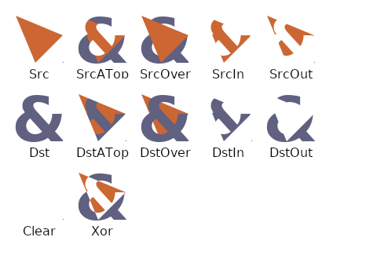
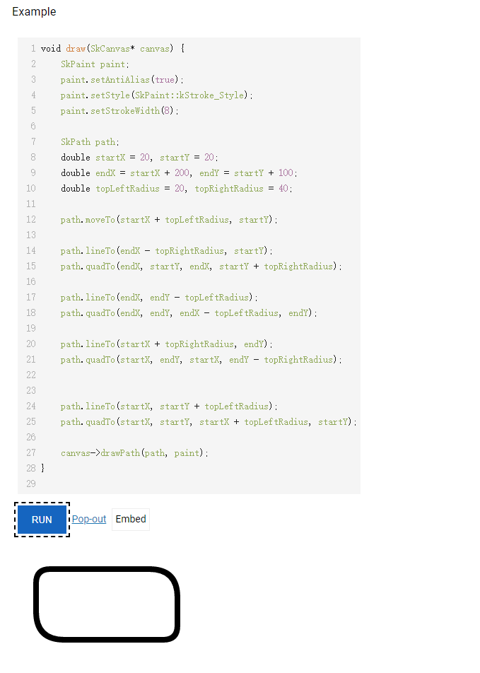

kotlin & android 笔记
λ：
Skia 是Android、flutter底层的2D图形库。Skia 官网。
2D页面无非就是 图形(点、线、面)，文字, 所以Skia设计也很简单：
- 新建
Canvas, 画布，所有内容画在这上面 - 通过
Canvas相关方法画出内容。一般名为drawxxx(), 同时要传入一个Paint, 也就是画笔样式。 - 通过
Canvas相关方法裁剪画布，一般名为clipxxx() - 内容定位，以
Canvas左上角为(0, 0)点，向右向下建立(x, y)坐标系。
在官网可以直接体验这些API的C++版本，android和flutter无非是做一层包装，API大差不差。
用处：
自定义View。 不管是
Android还是flutter想要自定义程度高就离不开直接操作Render层。大多数情况的确可以用现有的组件拼凑出想要的效果，但坏处就是损失很多没必要的计算和渲染，而且有些东西生写不出来。flutter有很多组件原生设计简单，然后留出canvas用来自定义样式。设计UI时，大概估计一下有多费。尤其是
flutter, 之前团队项目写出来的列表肉眼可见的掉帧。 我翻看这部分代码，发现大量的无用的组件嵌套，然后频繁的rebuild, 宽高很多写死，没有自适应能力。很多UI长一样却不复用，出现ItemXXXView1, ItemXXXView2这种东西。所以有一段时间的工作就是删代码，git记录我一个月添加了几百行然后删了几千行。
Canvas
draw
drawColor: 喷色，不需要传画笔。drawRect: 画矩形Rect，需要左上角点的坐标和矩形宽高，同时传入一个Paint画笔样式drawRoundRect: 类似drawRect, 不同是可以设置圆角，通过传入圆角的 x, y 偏移值drawOval: 椭圆Oval，类似drawRect。drawCicle: 圆Circle, 类似drawRect。drawPath: 画线，需要传入Path线的路径和Paint画笔。drawText: 渲染文字，需要传入文字，起始位置的坐标，Paint画笔（主要设置文字样式）。
clip
clipxxx: 裁剪画布，可以传 Path, Oval, Rect, Circle 等等
trans
translate(x, y): 平移到x, y。 作为新的原点scale(x, y): 缩放rotate: 旋转save: 保存当前状态，一般在变换前调用restore: 恢复现场，必须保证之前有save操作
Path
除了规则图形外，其他 点，线，面 都可以通过Path画出来。然后就变成了数学题。
点动成线，线动成面，面动成体, 当直线长度与画笔粗细相同，就相当于画了一个 点, 而 面 可以看作多根 线 并排的结果。
moveTo(x, y): 移动到指定坐标lineTo(x, y): 从当前位置向 (x, y) 画直线。 获得线段(localX, localY) -> (x, y)quadTo(x1, y1, x2, y2): 贝塞尔曲线。从当前位置经过 (x1, y1) 向 (x2, y2) 画平滑曲线conicTo: 类似quadToaddCircle、addRect等等，添加现成图形close: 当前点与起始点连接，形成闭合图形。
Paint
color,width: 颜色，粗细style: 填充方式fill: 实心stroke: 镂空、描边
fontStyle: 字号，字体，字宽，字重等等属性。 原生C++里通过构造可绘制字符串(sk_sp<SkTextBlob>)实现,android封装进了Paint里。flutter封装进了TextStyle。filter|shader: colorFilter，maskFilter等等效果
BlendMode
用于处理两个元素A, B 相交时显示方式。
(A在B上， A在B下， A与B同级) * (交集， 并集， 异或集)。

实践
利用Path画圆角长方形。
- 圆角值
topLeft == bottomRight == 20,topRight == bottomLeft == 40 - 起始位置(20, 20)
- 宽 200, 高 100
1 | void draw(SkCanvas* canvas) { |
